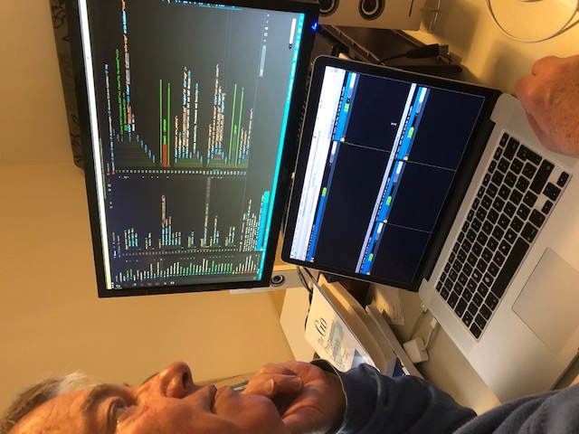
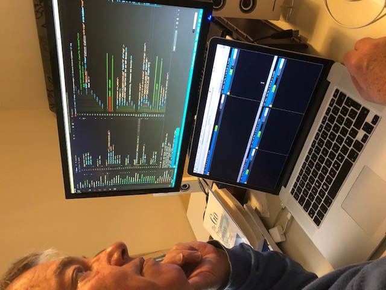
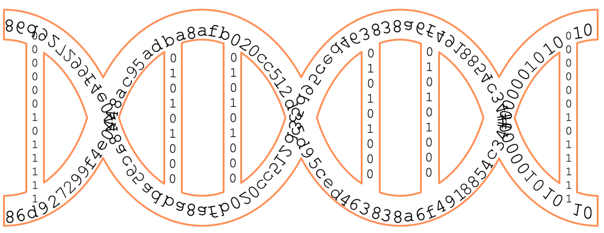

How to guarantee authenticity and provenance of data in a connected world of IoT, IoMT and AI?
The prototyping project is jointly financed by the European Union, European Regional Development Fund (SNN) and Life2Ledger BV

All (sensor) data that have or could have any medical, juridical, financial/economical or scientific value, must have guaranteed authenticity and demonstrable provenance"
Data must be proven authentic to
Medical data must also be GDPR compliant
Solution =>
Authenticity with Blockchain Technology
There will be an explosion of data during the coming years. It is estimated that the Internet of Things (IoT) and the Internet of Medical Things (IoMT) alone will be generating 160 Zettabytes(1 Zettabyte = 1 billion Terabytes). These data must have guaranteed authenticity in the broadest sense of the word.

When we speak of the IoT or IoMT, we generally refer to networked-connected devices whose purpose is to gather and disseminate data autonomously and, increasingly, to act autonomously upon this data to carry out tasks, as for example a network-connected printer that orders its own supplies when they run low. We employ a very broad definition of IoT, including all types of connected sensors and meters, actuators (devices that do something in the physical world, like robots or drones) as well as the software that runs them.
The main challenge then, is how to secure these data that are transmitted over the internet from one device to a central authority or server and make sure that
Also the tsunami of Io(M)T devices that will come on stream will have to be managed and administered. This calls for solutions build on new technologies, e.g. Distributed Ledger Technologies and Smart Contracts.
Pollution of data can be defined as data being changed during- or after measurement, either by accident, purposely (for scientific reasons, e.g. removing outliers) or deliberately (with evil intention).The importance of data authenticity may be illustrated with the following examples.
The PEBL™ protocol stack is build up from the newest transmission technologies guaranteeing authenticity and provenance of IoMT data.